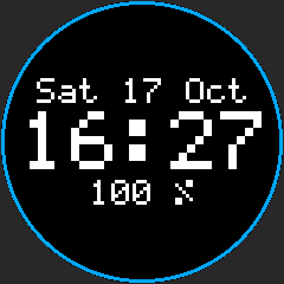

Open firmware for the UNA Watch.
It shows the time, updates over USB, and steps aside whenever you want the stock firmware back.
An independent project, not affiliated with or endorsed by UNA. For problems with it, open an issue rather than contacting UNA support.

Install
- On the stock version the release notes name, copy the Install glance to the watch
- Restart and open the glances: Install does a dry run and shows
ready - Check its log, then arm it: next time, Install puts wrist-rs on
- Set the time from your computer
Update
Over USB with wrist-update.py app.bin. A new version is kept once it has run a while with the computer connected; a restart before then rolls it back.
Back to stock
- Hold Select about 16 s
- Copy UNA's
.otatoUNA BOOT - Unplug, then choose Continue
Runs on Linux and macOS hosts. Needs the watch's original modules and LS012 display. UNA's bootloader code is never written; one blank page at the end of its partition records the install's outcome.